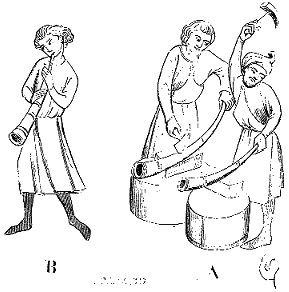
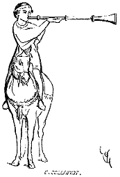

Eugène VIOLLET le DUC
Dictionnaire raisonné du mobilier.
 Figure 1 BUSINE, s. f. (buisine). Grande trompe d'un mètre et plus de longueur, légèrement courbée, étroite à l'embouchure et s'élargissant à son extrémité ; quelquefois percée d'un trou vers son milieu. Les busines étaient fabriquées en bois, en cuir bouilli, mais le plus souvent en laiton.
La figure 1 montre en A1 des ouvriers qui façonnent des busines au repoussé, et en B un jeune homme qui sonne de cet instrument2. La busine avait un son éclatant qui s'entendait de loin ; aussi les sculpteurs mettent-ils des busines aux mains des anges qui annoncent le jugement dernier. On l'employait, dans les camps, pour donner des signaux et réveiller les troupes.
Alors le son des busines annonçait la levée du camp, le moment du départ. C'était encore au son des busines que l'on conduisait les troupes à la charge ou à l'assaut.
On se servait aussi des busines sur les navires en partant, en arrivant et pendant les combats.
On disait businer, bacciner, et plus tard baciner, pour sonner de la busine. Quand le roi Charles VI rentra à Paris le 13 octobre 1414 : « Soudainement, environ huit heures de nuyt, commencèrent les bonnes gens de Paris, sans commandement, à faire feus et à baciner le plus grandement que on eust veu passé cent ans devant, et les tables en my les ruës drecées à tous venans par toutes les ruës de Paris qui point ayent de renoms3 » De cette manière de se réjouir nous sont restés les cornets à bouquin4 du carnaval, lesquels cornets ne sont que des busines de petite dimension.

Figure 2Il y avait dans les armées des busineors à cheval, chargés de rallier les hommes d'armes, de sonner certaines fanfare (fig. 2)5, d'annoncer l'attaque, de précéder les cortèges, de donner le signal de l'ouverture et de la fermeture de la lice dans les joutes et tournois. Ces busines droites sont plutôt de grandes trompettes.
Notes :
(1) Manuscr. Biblioth. du Corps législatif (1294).
(2) Manuscr. Biblioth. impér. (XIIIe siècle).
(3) Journal d'un bourgeois de Paris sous le règne de Charles VI, coll. Michaud, t. II, p. 643.
(4) Ou plutôt à bouquetin, c'est-à-dire fait avec les cornes de cet animal
(5) Des vignettes d'entourage du Roman de Tristan, Biblioth. impér., fonds français (1260 environ).